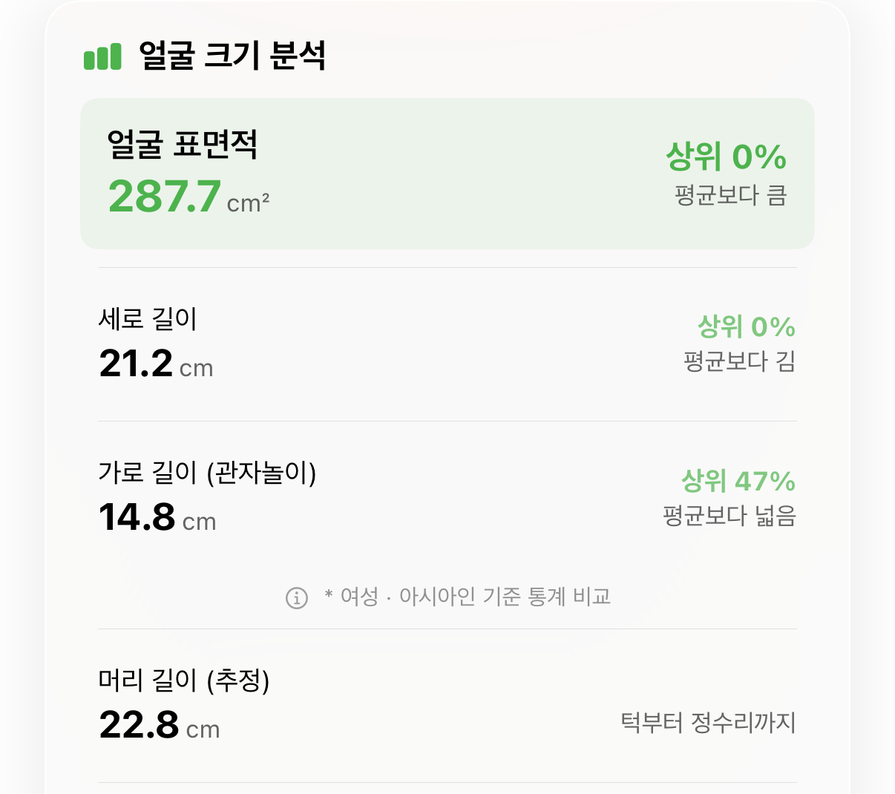
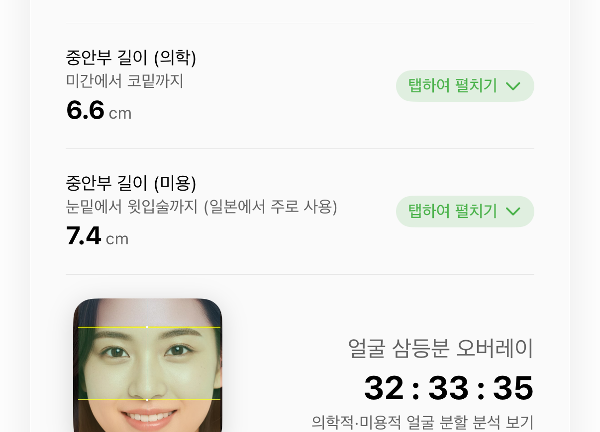
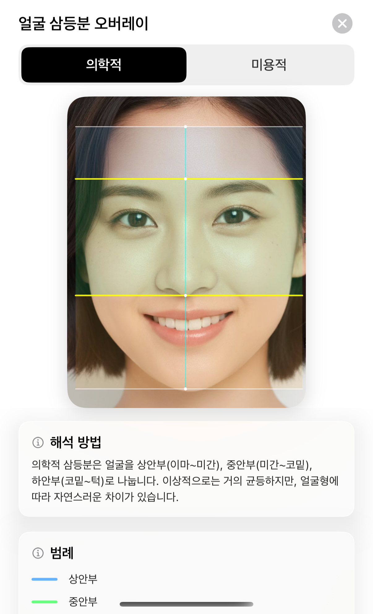
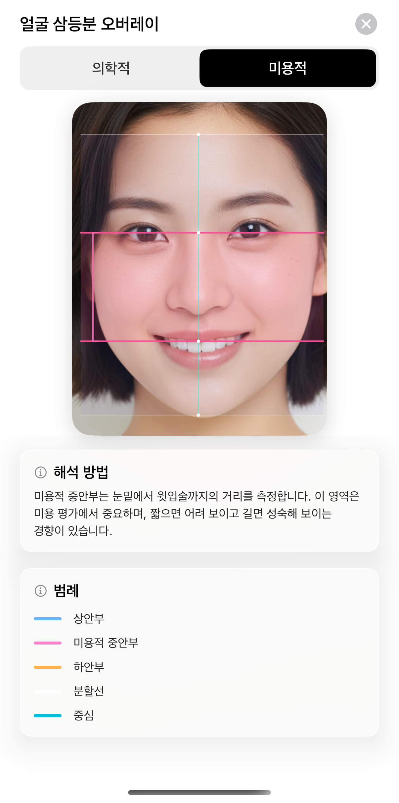
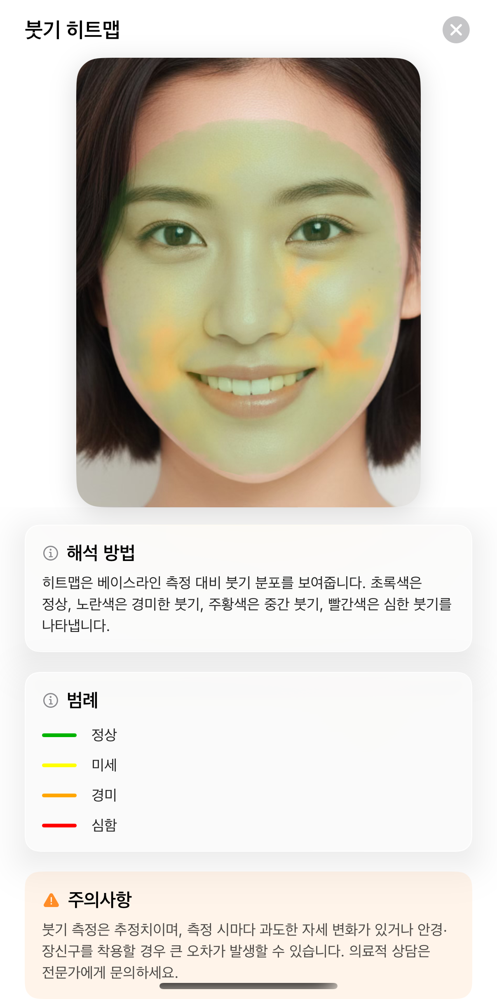
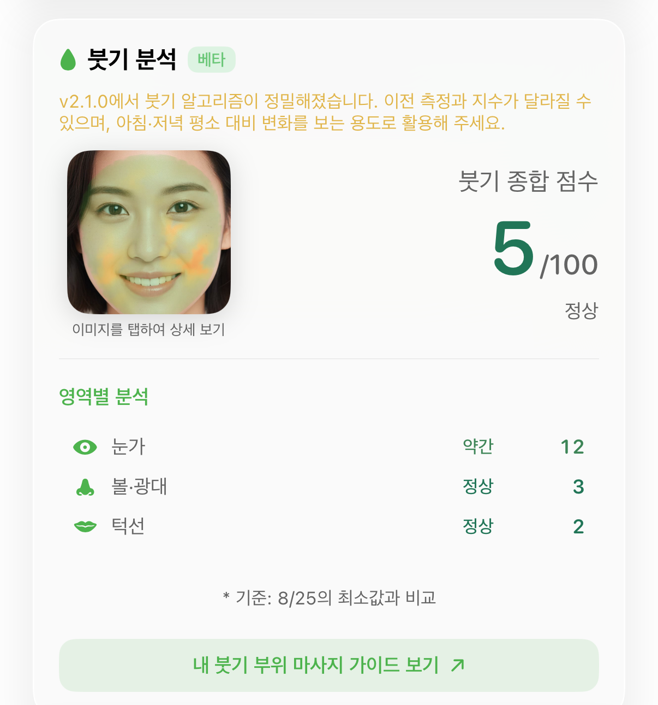
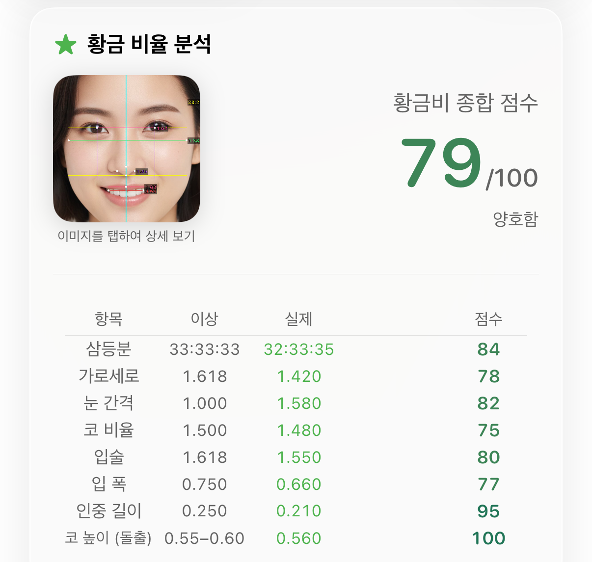
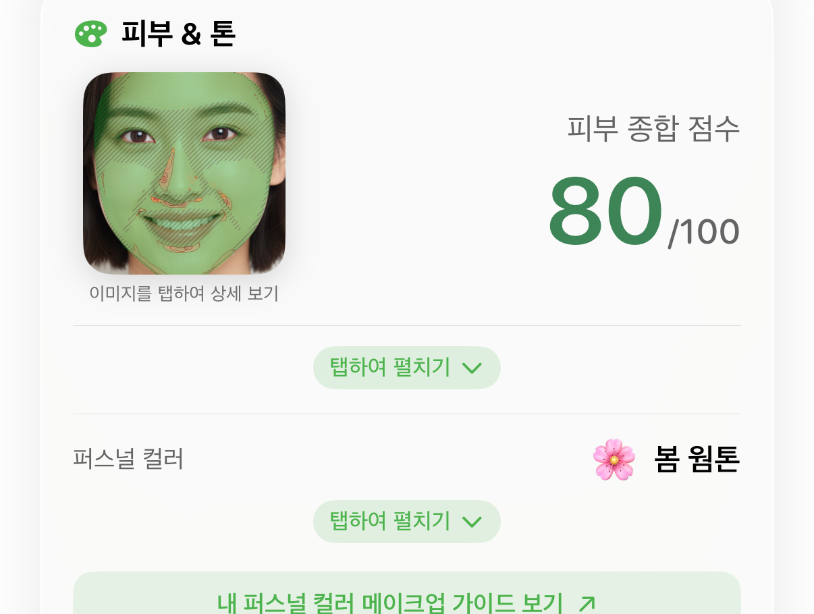
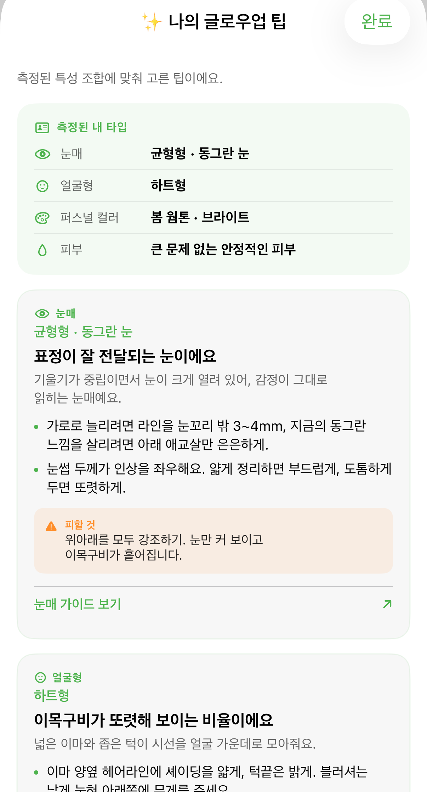
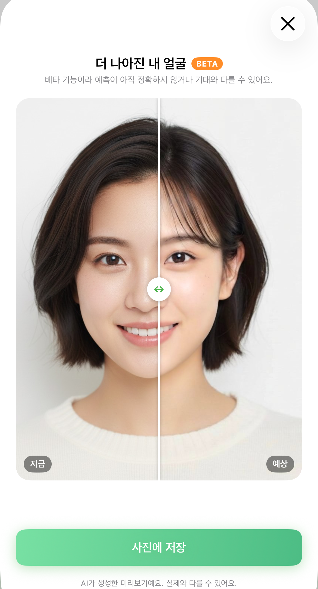

Renka 소개 자료
체험에 참여해 주셔서 감사합니다. 이 자료는 어떤 기능이 있고 각각 뭐가 볼 만한지 정리한 참고용이에요. 정해진 구성이나 순서는 없습니다. 편하신 스타일대로 자유롭게 만들어 주세요.
한 줄 소개
그대로 쓰셔도 되고, 바꿔 쓰셔도 됩니다.
다른 앱과 뭐가 다른가
다른 앱들은 평면 사진 한 장을 AI 서버에 보내서 결과를 받아옵니다. 사람이 눈으로 봐도 할 수 있는 판단이에요.
Renka는 얼굴 3D 측정을 씁니다. 사진을 보내는 게 아니라 얼굴의 입체 형태를 직접 잽니다. 그래서 면적·길이·각도처럼 사진으로는 나올 수 없는 값이 나오고, 측정도 폰 안에서 끝나요.
"이 앱 뭐가 다른데?"를 다루실 일이 있으면 이 지점입니다.
기능별로 볼 만한 것
순서에 의미는 없어요. 관심 가는 것만 보셔도 됩니다.
얼굴 크기

"얼굴이 크다/작다"는 보통 턱끝에서 정수리까지 잰 건데, 그러면 머리카락 두께가 같이 들어갑니다. Renka는 우리가 임의로 그은 선이 아니라 애플 엔지니어들이 고안한 얼굴 메시 기준 — 얼굴만 덮고 끝나는 그 경계 — 까지를 잽니다. 그래서 헤어스타일이 바뀌어도 값이 안 변하고, 누구에게나 같은 기준이에요.
머리 길이 옆에는 「추정」이 붙어 있어요 — 실측이 아니라 추산값입니다.
중안부 길이
같은 얼굴에 기준이 두 개예요. 의학적(미간→코밑) 6.6cm, 미용적(눈밑→윗입술) 7.4cm. 앱에서 전환하며 자기 얼굴 위에 얹어 볼 수 있습니다. 미용적 기준은 한국·일본 뷰티 쪽에서 흔히 쓰는 그 기준이에요.



붓기


급하시면: 촬영 직전에 연속으로 몇 번 측정해도 동작합니다 — 두 번째부터는 비교가 나와요. 다만 같은 날 안의 변화라 며칠 쌓은 것보다는 차이가 작게 보입니다.
황금비

한 화면에 정보가 많아서 결과 화면을 잡을 때 쓰기 좋아요.
이런 것도 있어요
피부 상태 맵 · 퍼스널컬러 · 얼굴형

피부 상태 맵은 붉은기·트러블·색소가 얼굴 어디에 몰려 있는지 얼굴 위에 색으로 얹어 줍니다. 카드를 탭해서 펼치면 거칠기·균일도 같은 세부 지표도 나와요.
나의 글로우업 팁 (새 기능)

측정 결과를 조합해서 팁을 골라 줍니다. "눈매가 이러니 아이라인은 눈꼬리 밖 3~4mm"처럼 수치에서 나온 이유가 같이 붙는 게 특징이에요. 상세 리포트 맨 아래 버튼으로 들어갑니다.
더 나아진 내 얼굴 (새 기능 · 베타)

팁대로 했을 때의 모습을 AI로 미리 그려 줍니다. 가운데 손잡이를 좌우로 밀어 지금과 예상을 비교하고, 사진으로 저장할 수 있어요. 글로우업 팁 시트 맨 아래에서 들어갑니다.
다이어트캠
음식을 찍으면 칼로리와 영양 정보가 나옵니다. 별도 결제 없이 쓸 수 있고, 음식 인식은 폰 안에서 돌아가요.
Rena AI 상담
측정 결과를 두고 AI와 대화할 수 있어요. 측정에서 나온 숫자를 바탕으로 답해 주는 게 특징입니다. 다이어트캠에서도 Rena 보조 인식이 하루 3회 무료예요.
시청자가 보는 화면은 다를 수 있어요
체험 코드로는 Pro 전체가 열려 있습니다. 일반 사용자는 이렇게 보여요:
- 측정과 기본 결과, 다이어트캠 — 무료
- 상세 리포트(중안부·황금비·붓기 상세, 피부 상태 맵, 글로우업 팁, 예상 얼굴 등 위 스크린샷 대부분) — Pro
- 라이브 필터 — 매일 무료 횟수가 있고, 그 이상은 Pro
댓글에 「이 화면 왜 안 나와요?」가 달리면 "상세 리포트는 Pro 기능"이라고 답해 주시면 됩니다.
측정은 폰 안에서 끝납니다. 사진을 서버에 올리지 않아요.
iPhone과 Android 둘 다 있어요.
점수에 대해: 앱 곳곳에 XX/100이 나옵니다. 「점수는 별로 쓸모없다」는 각도로
가셔도 괜찮아요 — 저희도 그렇게 말하고 있습니다.
한 가지만 부탁드려요: 미용 시술 효과나 시술 전후 비교로 읽히지 않게 해 주세요. 「이 부위가 이러면 이렇게 보인다」까지가 좋고, 「어떻게 고친다」로는 안 갔으면 합니다.
해시태그 참고
붙이고 안 붙이고는 자유예요. 많이 쓰이는 것들을 적어 둡니다 (유행은 바뀌니 참고만).
- 전반: #얼굴분석 #자기관리 #꾸안꾸 #얼굴형 #퍼스널컬러진단
- 소재별: 얼굴 크기 → #소두 #얼굴크기 / 중안부 → #중안부 #중안부길이 / 붓기 → #붓기 #붓기빼기 / 컬러 → #퍼스널컬러 #웜톤 #쿨톤 / 팁·예상 얼굴 → #글로우업 #뷰티팁
- 시술 계열 태그(#성형 등)는 붙이지 말아 주세요 — 위 부탁과 같은 이유예요.
괜찮으시면 #Renka3D를 하나 넣어 주세요.
저희가 영상을 찾기 쉬워지고, 공식 계정에서 소개하거나 응원하기도 쉬워집니다.
(#Renka만으로는 다른 게시물에 묻혀서 3D를 붙여 부탁드려요.)
소재
- 소재 한 번에 받기: renka-kit.zip (스크린샷 10장 + 아이콘·로고)
- 라운드 아이콘: 1024 · 512 — 홈 화면 아이콘 모양 그대로라 영상·썸네일에 얹기 좋아요
- 로고: renka_logo.png
- 스크린샷 원본: 얼굴 크기 · 중안부 · 의학적 3등분 · 미용적 3등분 · 붓기 히트맵 · 붓기 부위별 · 퍼스널컬러 · 황금비 · 글로우업 팁 · 예상 얼굴 (본문 이미지도 탭하면 원본이 열려요)
- 공식 이름: App Store 「Renka - 3D 얼굴 분석기」 · 검색은 「Renka」 또는 「렌카」로 나옵니다
- App Store: apps.apple.com/kr/app/id6756908316
- Google Play: play.google.com/store/apps/details?id=com.fattail.renka
- 공식 홈페이지(한국어): fattaillabs.com/RenkaAI/ko/ — 기능 소개와 FAQ가 있어요. 영상 문구 참고용으로 쓰셔도 됩니다